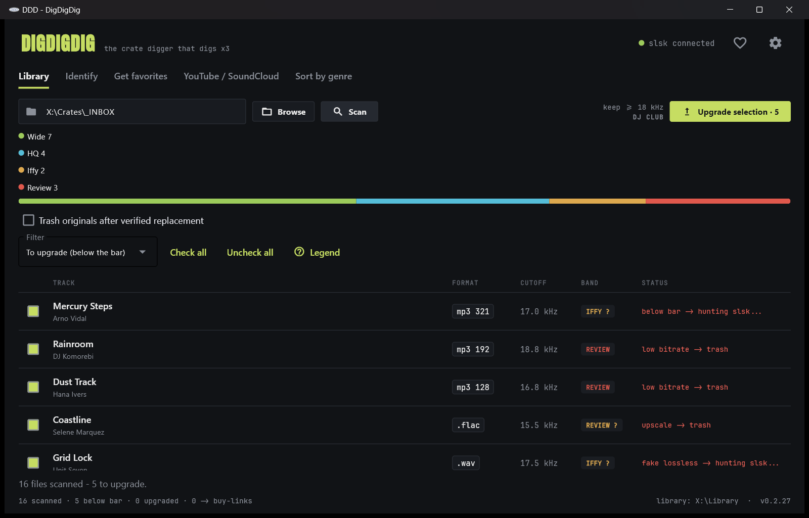
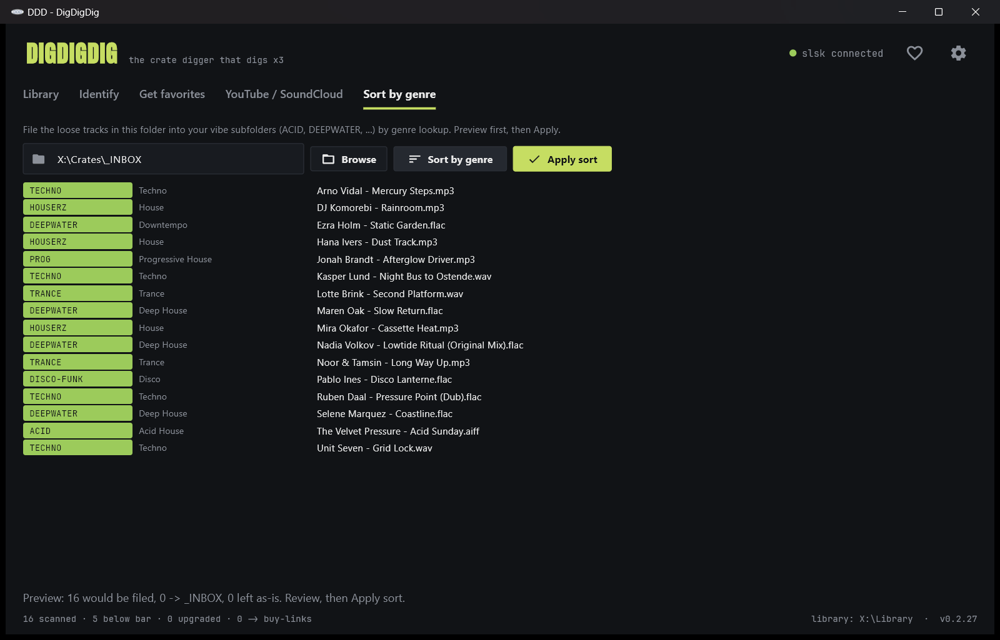
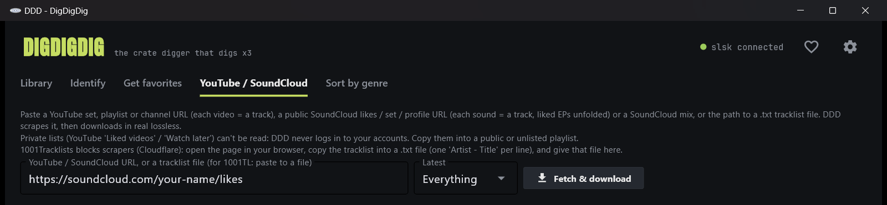
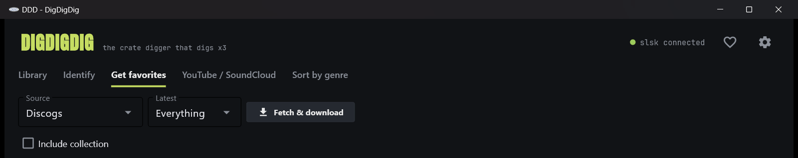
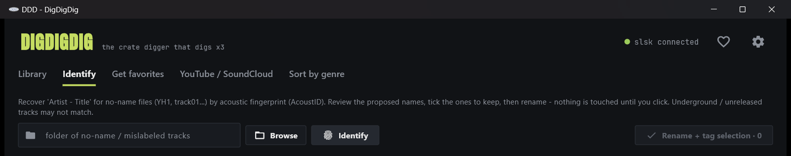

What is it?
DDD cleans up your music library and bumps it to club-playable quality, on its own. It flags limited bandwidth for review, searches Soulseek for a better copy (FLAC, WAV or AIFF, with an automatic MP3 320 fallback), checks every download by spectrum, and files it into one clean library, sorted by genre from the audio itself when the tags are empty. No need to be a developer: it's a window.
Your sources
Scan any folder, pull your Discogs wantlist or Bandcamp wishlist, or paste a YouTube set / playlist / channel or your SoundCloud likes, sets and mixes. Reads FLAC, WAV, AIFF, MP3, MP4 / M4A, WMA, APE and more, old rips included.
Soulseek
Looks for FLAC / WAV / AIFF with an automatic MP3 320 fallback, live per-track status and automatic resume. Anything not found comes out as Discogs / Bandcamp buy links.
The spectrum
FFT analysis ranks each file Wide / HQ / Iffy / Review, plus duration and identity checks. Only the right track, above your bar, is kept.
What it looks like
Five tabs, one native window. No terminal.





Measure, compare, review
Spectral analysis measures bandwidth, not compression history. A genuine filtered recording can have little high-frequency content, so DDD flags measurements against your chosen threshold: listen before removing originals. Every downloaded file is re-audited (spectrum + duration + title/artist identity) and ranked by its real cutoff. You pick what DDD keeps, and what it hunts for: DJ Club (>= 18 kHz, default, MP3 320 included), Audiophile (>= 20 kHz), Purist (wide spectrum), or a target format: MP3 320 (vintage gear / mobile), WAV/AIFF only or FLAC only. MP3s below 320 kbps are banned no matter what; originals are retained by default.
Sorted by the sound, not the name
"Sort by genre" files your loose tracks into your own vibe folders (ACID, DEEPWATER, HOUSERZ,
TECHNO, TRANCE, DISCO-FUNK, ...). It reads the genre tag, asks Discogs, and when both come up
empty it classifies the audio with a local Discogs-EffNet model (400 Discogs styles, run
on-device, no cloud). So even a badly named, untagged, never-released edit lands in the right folder
instead of an _INBOX pile.
How it works
A few clicks in the window.
- Fill in your access (gear, top right): Soulseek login, Discogs token, and the library folder.
- Scan a folder, or pull your favorites / a set: DDD ranks every file and spots duplicates.
- Upgrade: what passes your bar lands in your library, originals are retained by default.
- Sort by genre: file the whole pile into vibe folders. One clean, de-duplicated library.
- Identify the no-name leftovers by fingerprint, confirm, rename + tag.
Also on the command line, portable Python core (Windows / Mac / Linux):
ddd scanddd upgradeddd importddd rename
ddd identifyddd sortddd buyddd scrape
ddd acquireddd detector-shadowddd selftestddd configddd gui
Something off on your machine? Run DDD.exe --selftest: it checks decoding, fingerprinting,
Soulseek, the genre model and the scrapers end to end, and writes a report you can send along.